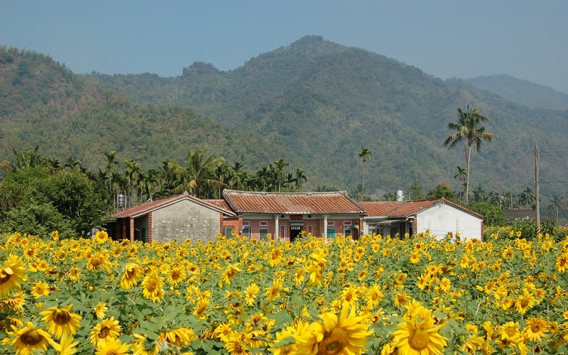
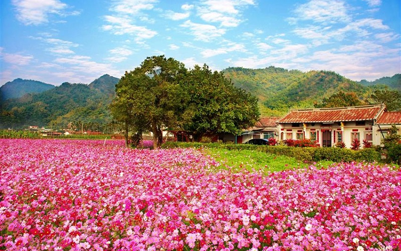
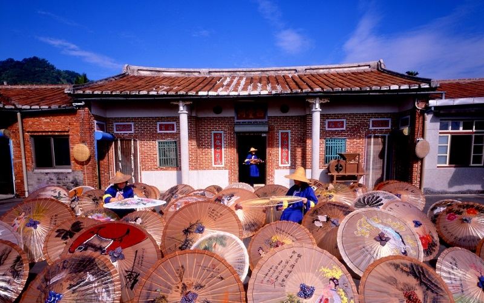
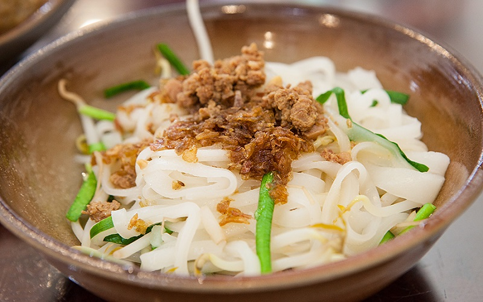

Meinong
Kaohsiung City
Sunflower field
  Meinong is one of the four districts in Kaohsiung that is the central focus of Hakka cultural development.
93.5% of the residents here are the Hakka people, making the regoin a countryside with Hakka livestyle. Specialty such as
oil-paper umbrellas, rice noodles are representations for the Hakka culture. The main industries here are agriculture
tourism. During winter,in which not being able to grow crops, flowers are planted instead to attract tourists to come
and enjoy the magnificent flower fields.
- Best seasons: Early spring
- Transportation: Public bus "Chi-mei Highway Bus"service to the area is available from THSR Zuoying Station.